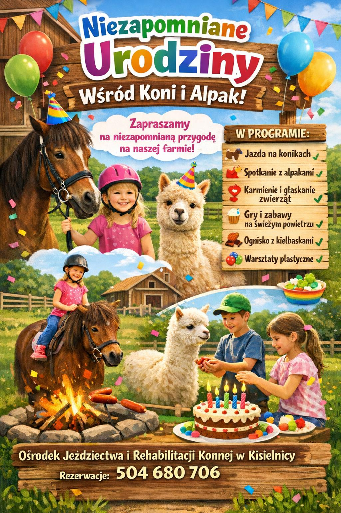

Nauka jazdy konnej
Lekcje jazdy konnej dla początkujących i zaawansowanych jeźdźców. Zajęcia prowadzone indywidualnie lub w małych grupach na ujeżdżalni lub w terenie. Zapewniamy kaski i niezbędny sprzęt.
Zobacz cennikSzeroki wybór usług jeździeckich w Kisielnicy k. Łomży
Lekcje jazdy konnej dla początkujących i zaawansowanych jeźdźców. Zajęcia prowadzone indywidualnie lub w małych grupach na ujeżdżalni lub w terenie. Zapewniamy kaski i niezbędny sprzęt.
Zobacz cennikMalownicze trasy przez lasy i łąki Podlasia. Rajdy terenowe dla jeźdźców na każdym poziomie zaawansowania. Odkryj piękno natury z perspektywy końskiego grzbietu.
Zobacz cennikHipoterapia dla dzieci do 18. roku życia, które korzystają z rehabilitacji w ramach NFZ w szpitalnym Ośrodku Rehabilitacji dla Dzieci z Zaburzeniami Wieku Rozwojowego. Jako bonus od Szpitala — za symboliczną złotówkę, 1–2 razy w tygodniu.
Dowiedz się więcejDla dzieci, które nie są naszymi pacjentami lub mogą uczestniczyć w zajęciach tylko popołudniami albo w weekendy. Prowadzona przez fizjoterapeutę z kwalifikacjami do hipoterapii. Koszt 100 zł za 30 minut.
Dowiedz się więcejPółkolonie dla dzieci i młodzieży od poniedziałku do piątku (8:00–15:00). W programie: codzienne jazdy konne, nauka opieki nad końmi, ogniska, gry terenowe i wiele więcej.
Zobacz cennikWyjątkowy sposób na uczczenie urodzin! Organizujemy imprezy urodzinowe z jazdą konną, oprowadzaniem po stajni, wspólnym karmieniem koni i ogniskiem z pieczeniem kiełbasek.
Zobacz programRomantyczne i rodzinne przejażdżki bryczką po okolicach Kisielnicy. Idealne na wesela, chrzciny, imprezy firmowe lub po prostu na relaksujące popołudnie w otoczeniu natury.
Zapytaj o ofertęOferujemy bony podarunkowe na jazdy konne i inne atrakcje naszego Ośrodka. Idealny prezent dla bliskich. Dostępne w kasie Szpitala Wojewódzkiego w Łomży oraz bezpośrednio w Ośrodku w Kisielnicy.
Gdzie kupić?W Ośrodku Jeździectwa i Rehabilitacji Konnej w Kisielnicy prowadzona jest hipoterapia dla dzieci do 18. roku życia w dwóch formach:
Skierowana do dzieci, które korzystają obecnie z rehabilitacji w ramach NFZ w szpitalnym Ośrodku Rehabilitacji dla Dzieci z Zaburzeniami Wieku Rozwojowego, znajdującym się w Szpitalu Wojewódzkim w Łomży. Hipoterapia nie jest finansowana przez NFZ — w tym przypadku jest bonusem od Szpitala za symboliczną złotówkę dla naszych pacjentów korzystających obecnie z rehabilitacji. W zależności od liczby dzieci korzystających jednoczasowo, zajęcia realizowane są 1–2 razy w tygodniu.
Dla dzieci, które nie są naszymi pacjentami, lub mogą uczestniczyć w hipoterapii tylko w godzinach popołudniowych albo w weekendy, rozszerzyliśmy zakres o hipoterapię komercyjną.
Hipoterapię — zarówno dla pacjentów rehabilitowanych, jak i komercyjną — prowadzi wyłącznie personel z odpowiednimi kwalifikacjami.
Oferujemy bony podarunkowe na jazdy konne i inne atrakcje naszego Ośrodka. To wyjątkowy prezent dla bliskich, którzy lubią obcowanie z naturą i końmi.
Bony podarunkowe dostępne są:
Szukasz wyjątkowego pomysłu na urodziny dziecka? Zapraszamy do Ośrodka w Kisielnicy na rodzinną przygodę pełną kontaktu z naturą, zwierzętami i dobrą zabawą na świeżym powietrzu.

Termin i szczegóły programu ustalamy indywidualnie. Aby zarezerwować urodziny lub zapytać o ofertę, zadzwoń:
Każdy uczestnik zajęć otrzymuje od nas w cenie kompletny sprzęt ochronny:
Zalecamy długie, wygodne spodnie oraz buty z niewielkim obcasem.